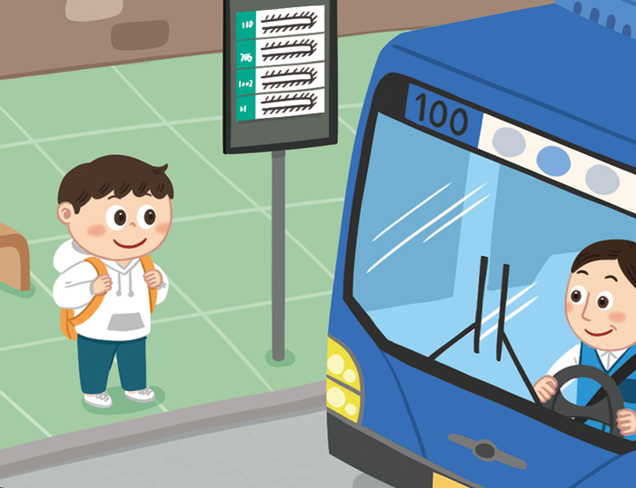

-
다음에서 설명하는 것으로 알맞은 말을 찾으세요.
정보 통신 기술의 발달로 지식과 정보가 중심이 되어 생활의 변화를 이끄는 것을 말합니다.정보화고도화 -
정보화로 달라진 생활 모습으로 알맞은 모습을 찾으세요.
애플리케이션을 통해 가정에서 교육 정보를 확인할 수 있게 해요.버스가 언제 올지 몰라서 계속 기다리고 있어야 해요. -
인터넷 사용 습관으로 옳은 것을 모두 찾으세요.
맞춤법에 맞게 글을 씀.다른 사람을 불쾌하게 하는 글을 씀.개인 정보를 함부로 공개하지 않음.다른 사람의 창작물을 나의 것처럼 사용함.
- 1
- 2
- 3